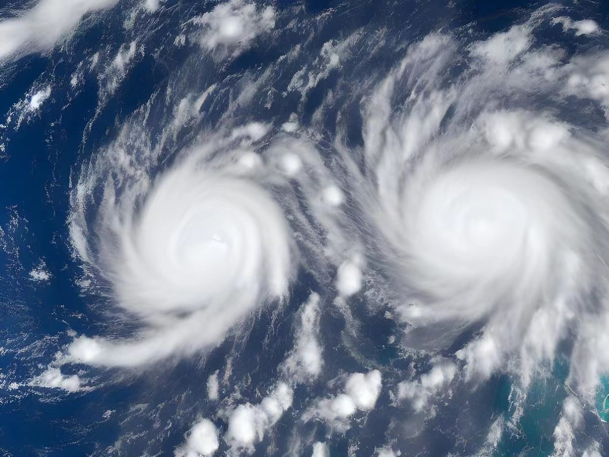
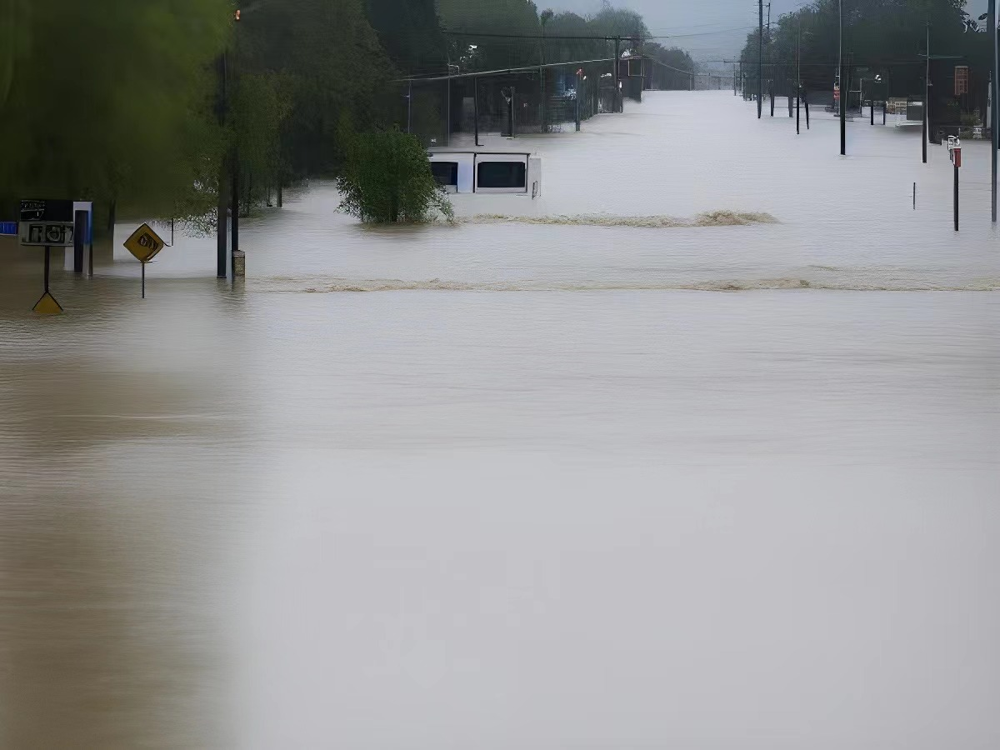
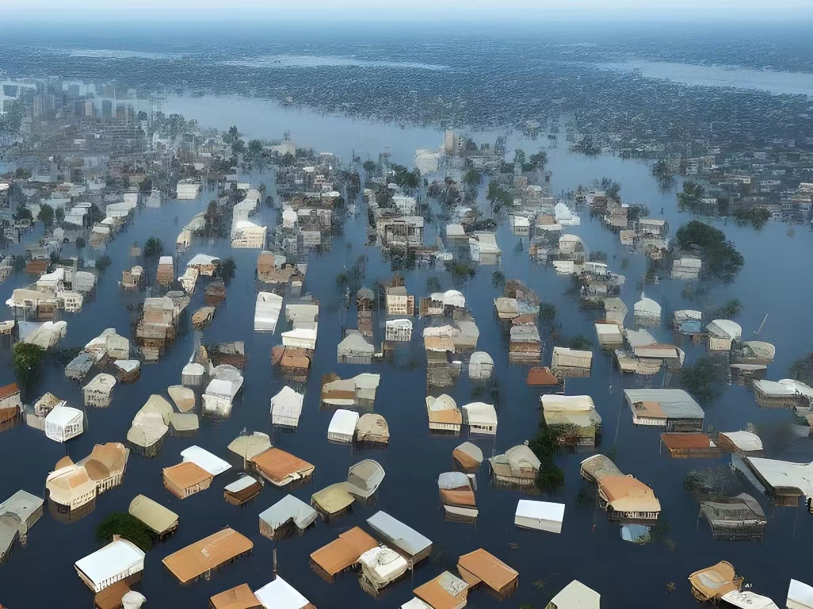
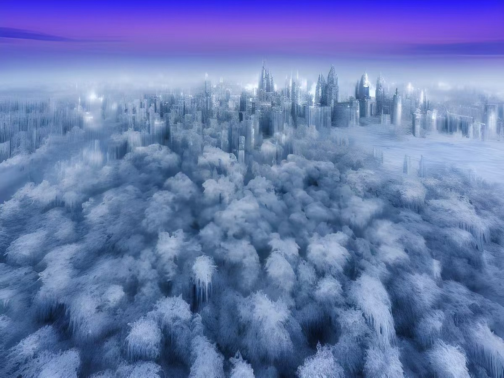

In 2024, an unprecedented climate change swept the world. Rapid global atmospheric changes have caused natural disasters that are unbearable for human beings. Within a few years, more than 85 percent of human civilization had been wiped out, leaving only 150 million people alive. Those who survived considered the disaster a divine punishment, calling it 'Cataclysm', or 'New Era.'
The first was violent atmospheric change, with earth-toppling hurricanes sweeping across all continents. The hurricane, which was more powerful than the earthquake, destroyed all the towering buildings almost overnight, leaving no count of the dead or injured. The diurnal temperature difference of more than 100 degrees Fahrenheit that followed the hurricane. Humans have lost almost all ability to go outside and have to hide indoors with temperature control systems to survive. Soon, however, rapid sea level rise and constant high-intensity earthquakes destroyed the last of humanity's structures and robbed people of any hope of living.
Within a year, the global population had fallen below 500 million. Although the intensity of natural disasters has decreased rapidly since then, human beings who lose the protection of civilization are still quickly dying. In the next two or three years, fewer than 200 million of the 500 million remained. These barely adapted to the harsh natural environment of the people spontaneously united, intent to establish a new human civilization, to continue the fire of civilization.
| Hurricane | Flood |
|  |  |
| sea level rise | City Frozen |
|  |  |